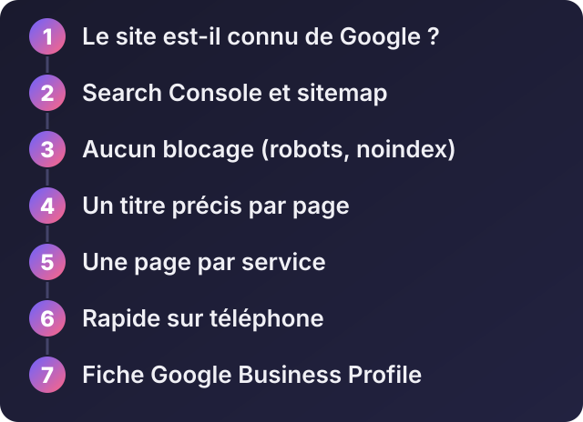
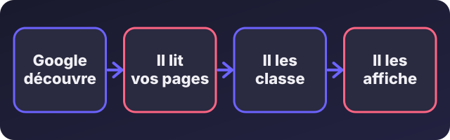

Mon site n'apparaît pas sur Google : 7 vérifications avant de payer

Écouter cet article · environ 3 min
Vous avez un site, vous le cherchez sur Google, et il n'y est pas. Avant de payer un « référencement », faites ces sept vérifications. Les trois premières règlent la plupart des cas.

1. Vérifier si le site est connu de Google
Dans Google, tapez site:votredomaine.com (en remplaçant par votre adresse). Si Google affiche des pages, votre site est indexé : le problème est ailleurs (point 4 et suivants). Si Google n'affiche rien, il ne connaît pas votre site : passez aux points 2 et 3.

2. Déclarer le site à la Search Console
La Google Search Console est l'outil gratuit de Google pour les propriétaires de sites. Ajoutez votre site, prouvez que vous en êtes le propriétaire, puis envoyez-lui votre sitemap (la liste de vos pages, souvent à l'adresse votredomaine.com/sitemap.xml). Vous pouvez aussi demander l'indexation d'une page précise. Sans cette étape, vous attendez que Google vous découvre tout seul, ce qui peut être très long.
3. Vérifier qu'on n'a pas interdit l'indexation
C'est une erreur fréquente : un site mis en ligne avec l'interdiction de l'indexer. Deux endroits à contrôler.
Le fichier robots.txt (à votredomaine.com/robots.txt) ne doit pas contenir ceci :
User-agent: *
Disallow: /Et le code de vos pages ne doit pas contenir :
<meta name="robots" content="noindex">Sur WordPress, regardez aussi dans Réglages > Lecture : la case « Demander aux moteurs de recherche de ne pas indexer ce site » doit être décochée.
4. Un titre et une description pour chaque page
Le titre de la page est ce que Google affiche en gros. Il doit contenir ce que vos clients tapent, avec la ville : « Réparation de climatiseurs à Cocody », pas « Accueil ». Chaque page a son propre titre, et sa propre description de 150 caractères environ.
5. Du vrai texte, une page par service
Google lit le texte. Un site fait d'images, ou d'une seule page qui parle de tout, ne répond précisément à aucune recherche. Faites une page par service, avec quelques paragraphes qui répondent aux questions de vos clients.
6. Le site doit être rapide et lisible sur téléphone
Testez-le sur PageSpeed Insights (gratuit) et sur votre propre téléphone. Des photos de plusieurs mégaoctets, un texte minuscule ou des boutons trop petits pénalisent à la fois vos visiteurs et votre place sur Google.
7. Être présent localement
Pour une recherche comme « boulangerie Marcory », Google met en avant les fiches d'entreprise (Google Business Profile). Créez la vôtre, avec le même nom, la même adresse et le même numéro que sur votre site, ajoutez des photos et demandez des avis à vos clients satisfaits.
Quand demander de l'aide
Si les sept points sont corrects et que rien ne bouge au bout de quelques semaines, envoyez-moi l'adresse de votre site : je regarde ce qui bloque et je vous dis honnêtement si cela vaut la peine de payer quelqu'un.